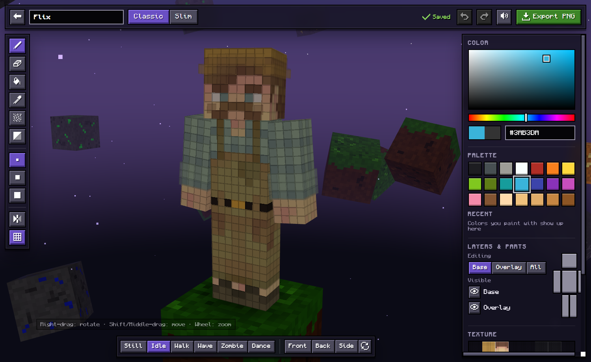
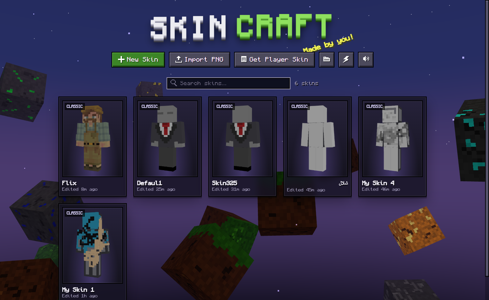
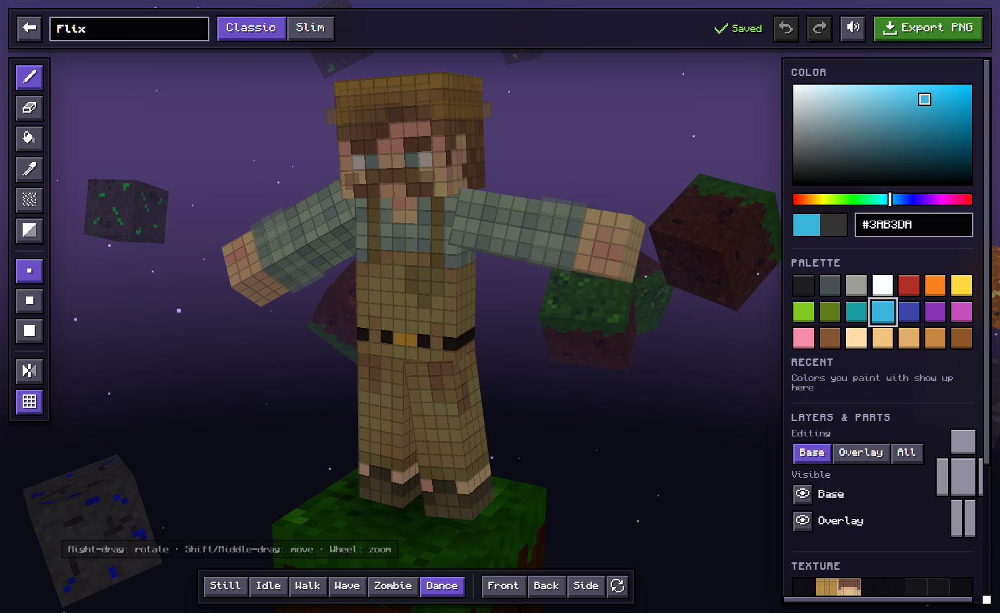

Features
Paint in 3D
Click and drag directly on the player model, or on the flat 64×64 texture view.
Mirror mode
Paint the left and right sides of your skin at the same time.
Smart fill
Fill a same-color area, a whole face, a body part or the entire layer, with a live preview.
Both layers
Edit the base skin, the outer layer (hat, jacket, sleeves) or both at once.
Shading tools
Noise brush and shade tool for textured, hand-drawn looking skins.
Classic & Slim
Switch between 4px (Steve) and 3px (Alex) arms anytime.
Poses
Preview your skin idle, walking, waving, as a zombie or dancing.
Skin library
Autosave, duplicate, import PNGs, or copy any Java player's skin by username.


How to make a Minecraft skin
- Download SkinCraft.exe and open it.
- Click New Skin, choose Classic or Slim, and start painting on the 3D model.
- Click Export PNG when you're done.
- Java: upload the PNG at minecraft.net → Profile → Skin. Bedrock: Dressing Room → Classic Skins → Import.
FAQ
Is SkinCraft free?
Yes. It's free to download and use, with no ads and no account needed.
Does it work for Minecraft Bedrock and Java?
Yes. SkinCraft exports standard 64×64 PNG skins, which work in both Java Edition and Bedrock Edition.
Do I need to install anything?
No. It's a single standalone .exe. It uses Microsoft Edge WebView2, which is built into Windows 11 and almost all Windows 10 PCs.
Can I edit an existing skin?
Yes. Import any PNG skin (old 64×32 skins convert automatically), or copy a Minecraft Java player's skin by username.
Windows says the app is unrecognized. Is it safe?
The app isn't code-signed, so SmartScreen may warn you the first time. Click More info → Run anyway. The full source code is on GitHub.
Is there a PC app like the mobile 3D skin editors?
That's what SkinCraft is: the paint-on-the-3D-model workflow of mobile skin editor apps, on Windows with mouse and keyboard controls.